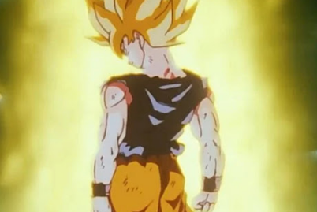

Momentos marcantes na série
A vingança do rei demônio
Este foi o primeiro grande inimigo que Goku enfrentou em sua vida. Apesar de todos os seus combates
anteriores contra diversos inimigos, nada poderia prepará-lo para isso.
Libertado por Pilaf de sua prisão milenar, Piccolo Daimaoh, conhecido como "rei demônio" em tempos antigos,
inicia novamente seu plano de dominação mundial, chegando a quase matar Goku em seu primeiro confronto.
Goku consegue derrotá-lo com muito custo, lhe atravessando o peito com seu punho em um ataque feroz.
O sacrifício de Piccolo
Com a chegada dos saiyajins à Terra dentro de um ano e com Goku morto, Piccolo toma para si a
responsabilidade de treinar Gohan. A princípio a relação dos dois não poderia ser pior, mas eles vão
aprendendo a apreciarem a companhia um do outro durante seu treinamento.
Quando Gohan estava prestes a ser morto por Nappa, Piccolo se coloca na frente do ataque mortal, perdendo
sua vida para salvar a do pequeno guerreiro.
É um momento muito bonito, que mostra um lado mais tenro do personagem pela primeira vez.
Goku descobre que é um Saiyajin
Quando criança, Goku possuía uma cauda e uma força extraordinariamente grande para seres humanos normais,
sem falar na habilidade de se transformar em um macaco gigante durante a lua cheia. O porquê disso foi um
mistério por muitos anos, algo que Dragon Ball Z respondeu.
Quando Raditz, irmão de Goku, vem à Terra, ele conta ao protagonista que ele é na verdade um saiyajin, uma
raça de guerreiros impiedosos vindos de outro planeta, o que o deixa bastante espantado.
Naquele momento, o universo de Dragon Ball era expandido como nunca antes.
Mais de oito mil!
Goku acaba chegando tarde demais durante a luta contra os Saiyajins, que terminou com todos os seus amigos
mortos, sobrando apenas Gohan e Kuririn para contar a história. Isso o encheu de raiva e o fez demonstrar o
enorme poder conseguido através do trainamento com o Senhor Kaioh.
Após dar uma pequena demonstração de seus novos poderes, Vegeta diz, espantado, que o poder de luta de Goku
supera 8 mil, numa cena que gerou um meme que até hoje é usado por aí.
Super Saiyajin

A saga de Freeza é uma das mais importantes da história de Dragon Ball, cheia de momentos épicos. Mas nenhum
supera a primeira transformação de Goku em Super Saiyajin, uma antiga lenda que Freeza sempre temeu.
Após ver Kuririn sendo assassinado pelo vilão bem diante de seus olhos, Goku se enfurece como nunca antes em
sua vida, o que o leva a superar seus limites e atingir essa nova forma, que tinha um poder simplesmente
irresistível.
Super Saiyajin 2

Durante os jogos de Cell, nenhum dos guerreiros Z é capaz de superar o vilão em combate, nem mesmo Goku,
protagonista da história. Mas ainda era cedo demais para perder a esperança.
Após ver o Andróide 16 ter sua cabeça esmigalhada por Cell, Gohan faz o que Goku sempre soube que ele
poderia fazer: supera seu pai e chega ao próximo nível de poder dos Saiyajins, o Super Saiyajin 2.
Cell e suas mini-cópias não tem a mínima chance contra o novo poder de Gohan. Mas a luta não acabaria aí...
Pai e filho

Cell é destruído com o sacrifício de Goku, que se explode com o vilão. Mas nem mesmo isso é o suficiente
para derrotá-lo definitivamente, já que ele acaba voltando a partir de uma única célula que sobrou.
Reunindo todas as suas forças e podendo usar apenas um de seus braços, Gohan dispara um ataque contra Cell
com o espírito de Goku o ajudando do além, em uma das cenas mais belas e inesquecíveis de toda a história da
série.
Trunks dá o troco
Durante a saga de Cell, conhecemos o Trunks do futuro, um saiyajin sobrevivente de um mundo onde os
androides mataram todos os guerreiros Z, incluindo seu mestre, Gohan, e espalham morte e destruição a seu
bel prazer.
Retornando ao futuro após a derrota de Cell, com seus poderes aumentados a níveis astronômicos, Trunks
finalmente tem sua vingança contra os androides assassinos, os derrotando sem nenhuma dificuldade e
finalmente fazendo justiça a seus amigos mortos.
É um momento muito empolgante, especialmente para quem acompanhou a tragédia do personagem, contada com
detalhes em um longa-metragem animado.
Majin Vegeta

Cheio de ódio e se sentindo humilhado por Goku, Vegeta se entrega ao mago Babidi de livre e espontânea
vontade em troca de poder.
Como resultado, ele joga toda a vida que construiu até aquele momento com Bulma e Trunks pelo ralo, só para
poder lutar contra seu rival de igual para igual.
É um dos pontos mais altos da saga de Buu e parte da jornada de Vegeta como personagem, que ainda tinha
muito o que evoluir pela frente, como guerreiro e como pessoa.
Fusão

Mesmo com todo seu poder, Gohan acaba sendo absorvido por Majin Buu, que fica ainda mais forte. Nem mesmo
Goku e Vegeta sem chance contra ele, e se veem obrigados a usar sua cartada final para vencer o inimigo:
fundirem seus corpos e se tornarem um único ser.
Usando os brincos Potara, os dois se tornam Vegetto, um novo e poderoso guerreiro, que finalmente pode fazer
frente a Majin Buu e seu enorme poder.
A resignação de Vegeta

Durante toda a sua vida, Vegeta foi um guerreiro orgulhoso, o príncipe de sua raça, criado desde o berço
para ser o mais forte, o mais poderoso. Mas tudo mudou depois de conhecer Goku, o que virou sua vida de
cabeça para baixo.
A partir dali, ele ganhou um rival para toda a vida, que ele passou seus anos seguintes tentando superar,
chegando até mesmo a se vender para Babidi. Mas em um raro momento de sinceridade com os próprios
sentimentos, Vegeta admite, finalmente, que Goku é superior.
Este segue sendo o ápice da evolução de Vegeta como personagem, um momento que supera as transformações
inéditas e as lutas épicas, onde podemos ver os verdadeiros sentimentos do orgulhoso príncipe.